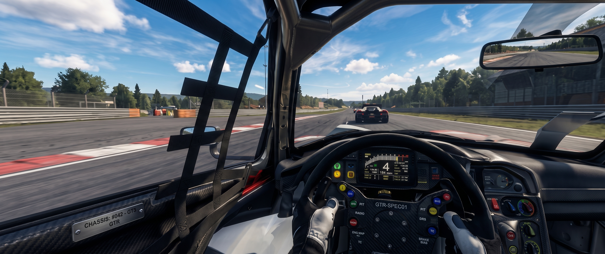
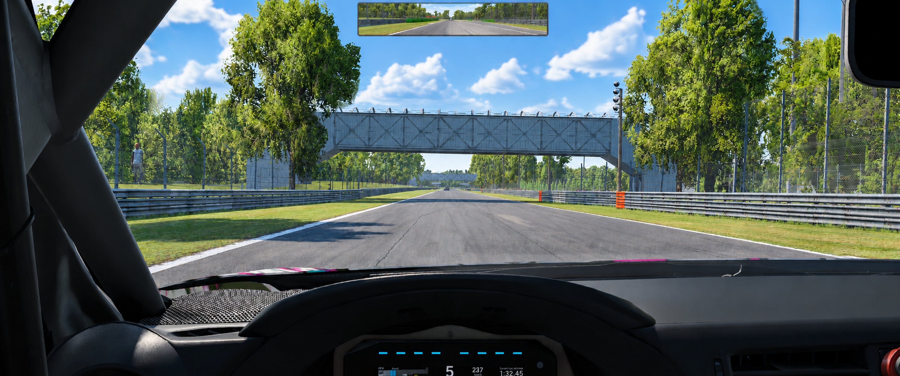
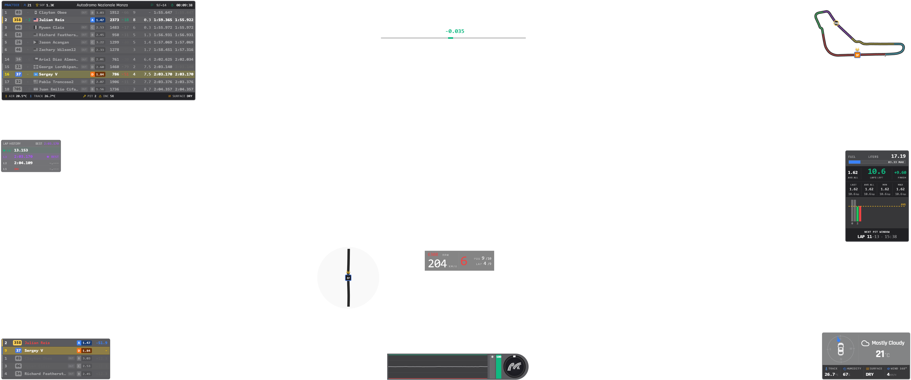
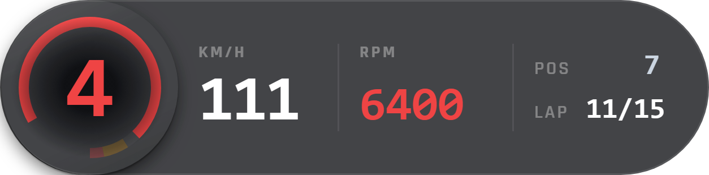
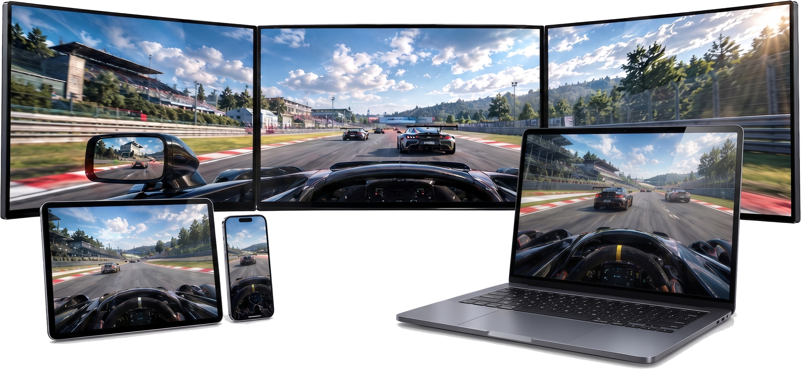
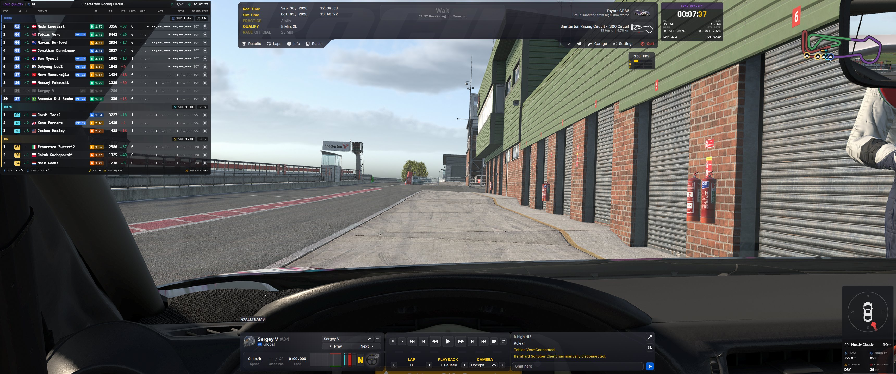
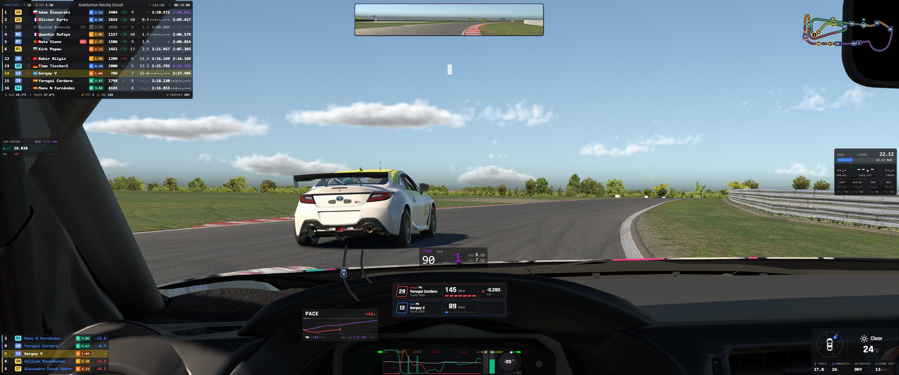
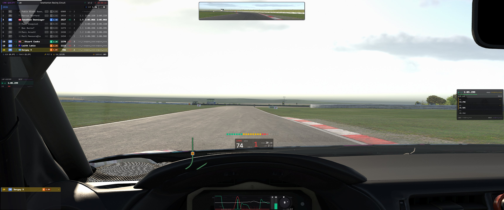
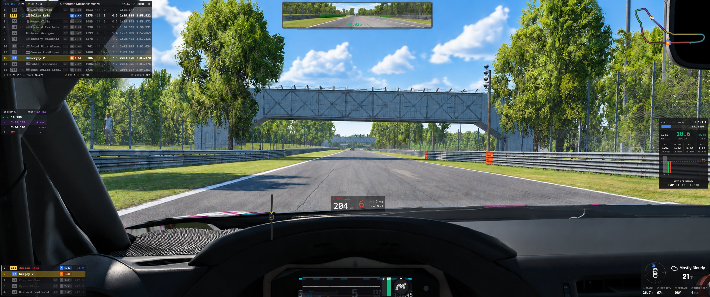

YOUR DATA.
Marble Trace is a free, lightweight overlay for iRacing. A tiny Rust core reads telemetry straight from the sim — beautiful widgets float above it, costing you almost no FPS.
-
Zero overhead
A tiny Rust backend reads telemetry directly, with minimal impact on performance.
-
Fully modular
Widgets can be independently positioned, resized and styled.
-
Layouts for every session
Visual editor and session-based layout switching for practice, qualifying and races.
-
Any screen
Use it on your main screen, a phone, a tablet or a second PC over your local network. Nothing installed on the device.


Why Marble Trace
Built for
real racing.
A transparent, frameless overlay that stays on top and never blocks your view.
Every widget in the app, at the size you actually read it. Take the four you race with, or the whole board.
Race & Performance
Race Dash

Speed, gear, RPM, position and lap in one strip — the one widget that never leaves the screen.
Multi-screen layouts
Same data.
Anywhere.
Open a layout on any screen on your network — a phone, a tablet, a laptop, a second PC. A browser is all the device needs; nothing is installed on it.
- A screen is a virtual monitor in the layout editor
- Every screen keeps its own widgets, scale and columns
- Open the link or scan the QR code — nothing to install

Desktop Triple monitor rig
Phone / Tablet On the wheel deck
Laptop Beside the rig
-
Virtual monitors
A remote screen is added in the layout editor beside your real monitors, at any size you like — a tablet, a phone, or a stream canvas. You drag widgets onto it the same way, and each screen keeps its own set, its own scale and its own columns.
-
OBS browser source
Point a Browser Source at the screen's address and the layout is on air, with a transparent background so only the widgets render. Add
?widget=to a link to put a single widget on its own source and place it in your scene. -
Just a browser
The app runs a small web server on your PC. Any device on the same network opens the link — no app, no account, no cloud, nothing leaves your network. Send rate is yours to set; lap times, fuel and the session clock always arrive in full.
-
Watching only
Links carry an access token you can regenerate at any time, and a device can only watch: nothing a browser sends can change a layout, a setting or the overlay you are racing on.
Layouts
A layout for
every session.
Which widgets, where, on which monitor. Give each session its own layout and the overlay switches as the session changes.




- Every monitor on one canvas
- Remote screens too
- Live data while you place
- Snap grid
- Undo and redo
- Duplicate a layout
Widget settings
Every widget,
your way.
Each widget opens with a live preview beside its settings. Switch a column off and it is gone from the picture before you are back in the car.
- Columns
- Rows
- View modes
- Scale
- Opacity
- Background
- Colours
- A copy for your stream
Controls
Bound to
a button.
Hide everything, cycle a view, send the pit order. Every action goes on a key or a wheel button, in every layout, and stays bound after a replug.
- Keyboard
- Wheels
- Button boxes
- Joysticks
- Pedals
Two keys
F8 to click.
F9 to move.
- F8 Interact
- Scroll the standings, switch classes, click the pit order. The mouse goes back to the game after 15 seconds.
- F9 Edit
- Drag and resize widgets right over the game. Press it again to lock them in place.
Try F9: click the key, or press it on your keyboard.
Both are defaults — any key or wheel button works.
Performance
Lightweight.
Fast.
Always on top.
A Rust core built on kerb, our own telemetry crate. Each window gets only what its widgets draw.
kerb on GitHub- iRacing Shared memory
- kerb Our Rust crate
- Rust core 60 · 10 · 4 · 1 Hz
- Marble Trace Only what is drawn
- Overlay And remote screens
- 60 Hz On the sim's own signal
- On demand Unused data is never sent
- Always on top Transparent, frameless
- Open source GPL-3.0 app, MIT kerb

Real performance.